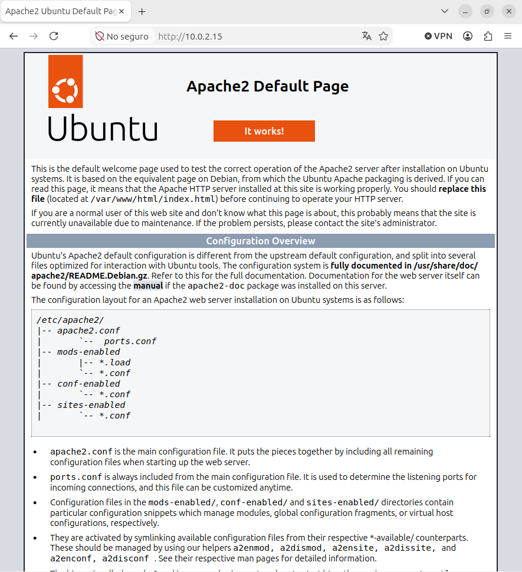
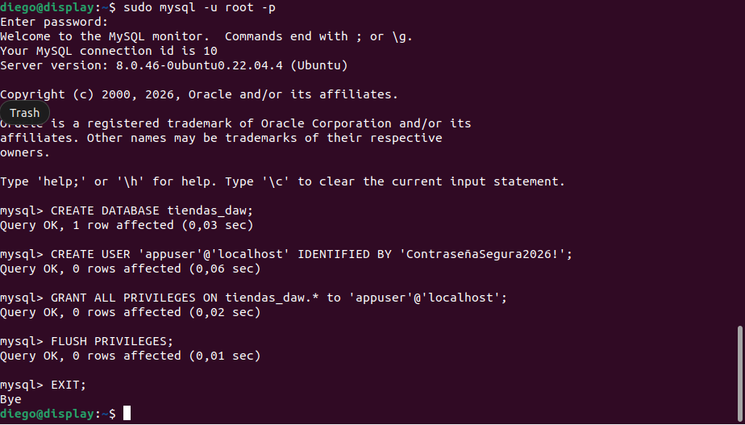
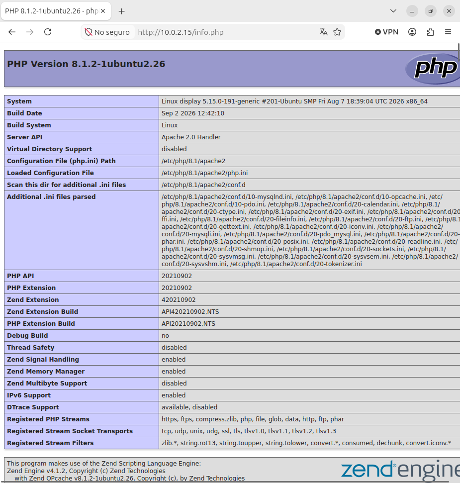
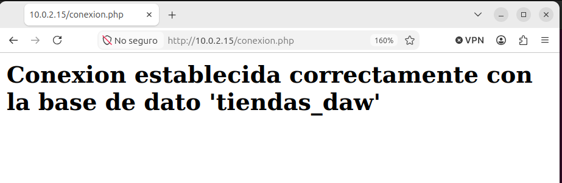

LAMPCAP 1En esta captura hemos accedido con la IP de nuestro servidor a la pagina WEB de nuestro APACHE :

Pregunta de reflexión: ¿Por qué es una mala práctica dejar el acceso remoto abierto para el usuario root de la base de datos? Respuesta: Es mala practica ya que varios usuarios pueden entrar a ese usuario de manera remota y pueden haber colisiones, ademas, root es un usuario administrador si alguien externo consigue entrar tiene todo el acceso a la BD.
CAP 2En esta captura tenemos que acceder a MYSQL y crear una BD y un usuario y luego darle permisos a ese usuario sobre la BD:

CAP 3En esta captura vamos a ver una pagina PHP que hemos creado despues de hacer una serie de comandos que instalaban PHP.
- El codigo que hemos insertado dentro de la ruta
/var/www/html/conexion.php
Y asi queda la pagina:

CAP 4Hacemos un archivo PHP y creamos una conexion entre los 3:

Pregunta de reflexión: identifica en este script cuál es la capa de presentación, cuál la de lógica de negocio y cuál la de datos.
<?php
$servidor = "localhost";
$usuario = "appuser";
$contrasena = "ContrasenaSegura2026!";
$bd = "tienda_daw";
$conexion = new mysqli($servidor, $usuario, $contrasena, $bd);
if ($conexion->connect_error) {
die("Error de conexión: " . $conexion->connect_error);
}
echo "<h2>Conexión establecida correctamente con la base de datos '$bd'</h2>";
$conexion->close();
?>
.php = die\echo (es lo que se muestra)..Condiconales = if.Base de datos = $bd = "tiendas_daw".